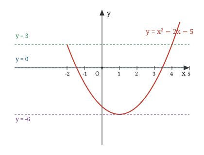

Based on Cambridge IGCSE Mathematics Core and Extended Coursebook, 3rd edition (Karen Morrison and Nick Hamshaw), Chapter 18 Curved graphs, printed pp.602–604 (using a quadratic graph to read roots and other solutions, Worked example 10 style, and the summary on p.603). Printed pages were read from rendered scans of part_058 (pp.602–603) and part_059 (p.604). Own wording and new numbers.
Key words: root, quadratic equation
A quadratic equation such as \(x^2-2x-5=0\) asks for the values of \(x\) that make the left-hand side equal to zero. Those values are the roots of the equation. They are not always whole numbers, so trial and error can be slow. A quicker method is to draw the graph of \(y=x^2-2x-5\) and read the \(x\)-coordinates of the points where the curve meets the line you need.
The solutions are the \(x\)-coordinates of the points where the curve meets that line. Always use a sharp pencil: small errors in reading the scale will change the last decimal place.
Book: Worked example 10 style, printed pp.602–603 (graph of \(y=x^2-2x-7\) used to solve three related equations). New equation and new graph.
The diagram shows the graph of \(y=x^2-2x-5\). Use the graph to solve the following equations, giving \(x\) to 1 decimal place.
(a) \(x^2-2x-5=0\)
(b) \(x^2-2x-5=3\)
(c) \(x^2-2x=-1\)
Answer: (a) \(x\approx-1.4\) and \(x\approx 3.4\); (b) \(x=-2\) and \(x=4\); (c) \(x=1\) (the curve is tangent to \(y=-6\) at the vertex).

In summary: read off the \(x\)-coordinates of the points where the curve meets the required horizontal line, and rearrange first when the given equation does not already match the graph you have drawn.
Book: Exercise 18.5 and the axis of a parabola (from 18.1); a graph of \(y=x^2-sx-q\) is symmetric about \(x=s/2\).
A graph of \(y=x^2-4x-3\) has been drawn. Write down the equation of its line of symmetry.
Answer: \(x=2\)
The graph of \(y=x^2-2x-7\) has been drawn. To use this graph to solve \(x^2-2x=1\), at what \(y\)-value should the readings be taken?
Answer: \(-6\)
Write down the equation of the line of symmetry of the graph of \(y=x^2-4x-3\).
Answer: \(x=2\)
A table of values for \(y=x^2-2x-8\) is being completed. Find \(y\) when \(x=3\).
Answer: \(-5\)
Marks: M = method, A = accurate answer (depends on M), B = independent mark. Graph readings are approximate; leave exact values exact when a rearrangement is algebraic.